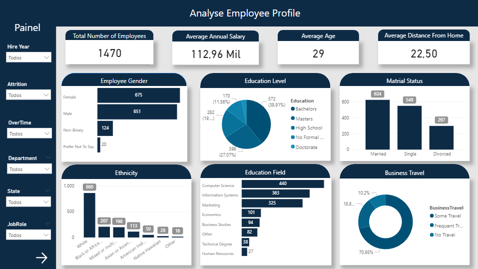
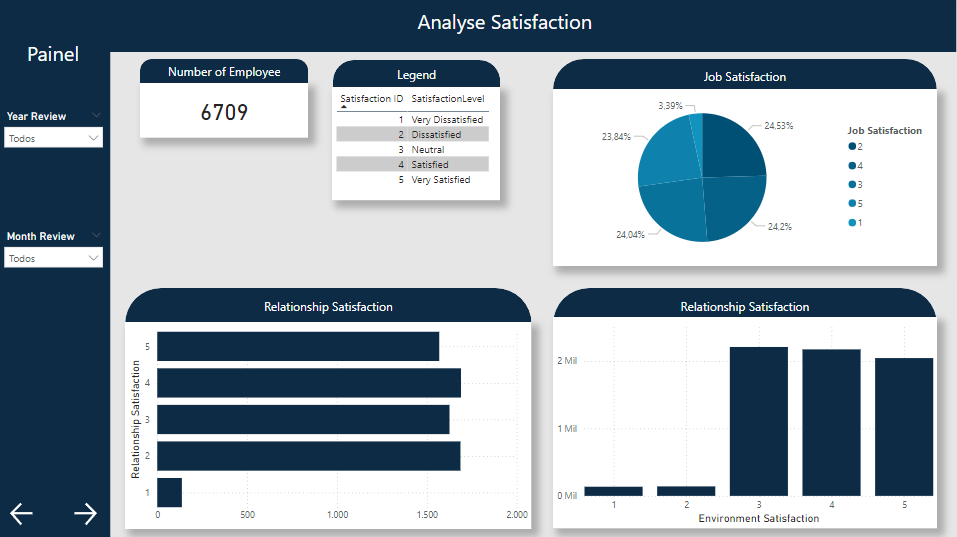
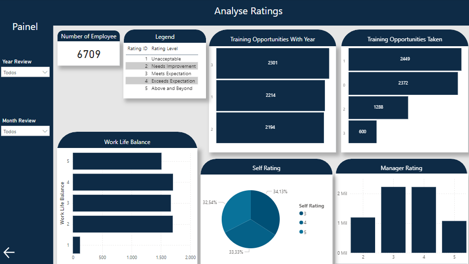

Bem-vindo(a) ao relatório de análise de Dados RH
The objective of this report was to analyze the employee profile and performance.
The data was extracted from Kaggle, and you can access it using the following link: Kaggle Dataset.
This was a relatively straightforward analysis, utilizing only the data source website, Excel, and Microsoft Power BI.
I checked the data consistency, performed the necessary transformation and cleaning, and began the analysis.
In analyzing the employee profile, we have a total of 1,470 employees, with an average annual salary of $112,000, an average age of 29 years, and an average distance of 22.5 km between home and work.
We can observe that the majority of employees are women, hold a degree in Computer Science, are married, belong to the White ethnicity, and frequently travel for business.
In the left panel, we can select various options to view, such as the year of hiring, current employment status, overtime hours, department, state of residence, and more.
Analyse Employee
Here we have a total of 6,709 reviews and a satisfaction level where we can analyze job satisfaction, relationship satisfaction, and environment satisfaction.
Analyse Satisfaction
We have the number of training sessions available per year, the number of individuals who attended the training, and how many sessions were conducted. We also have data on work-life balance, self-assessment, and manager evaluation.
Analyse Ratings
